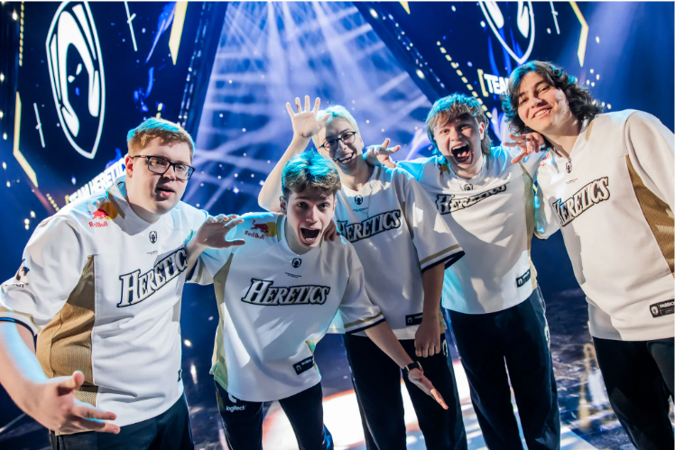

Heretics - Roster y Último Partido
Fecha: 1 de marzo de 2025
Resumen: El equipo Heretics está luchando por mantenerse en la cima de la escena competitiva de VALORANT con su roster renovado. En su último enfrentamiento, Heretics se enfrentó a Fnatic en una partida emocionante, donde mostraron gran habilidad táctica pero cayeron ante el poderío del equipo europeo.
Roster Actual
El roster de Heretics para 2025 incluye a jugadores como benjyfishy, Boo, MiniBoo, Wo0t y RieNs. El equipo se ha estado adaptando a nuevas estrategias mientras mantiene su enfoque en la mejora constante de sus habilidades individuales y de equipo.
Rendimiento en el Último Partido
En su enfrentamiento contra Fnatic, Heretics mostró momentos de brillantez, pero al final no logró cerrar la serie a su favor. A pesar de la derrota, el equipo sigue demostrando que tienen lo necesario para competir con los mejores.